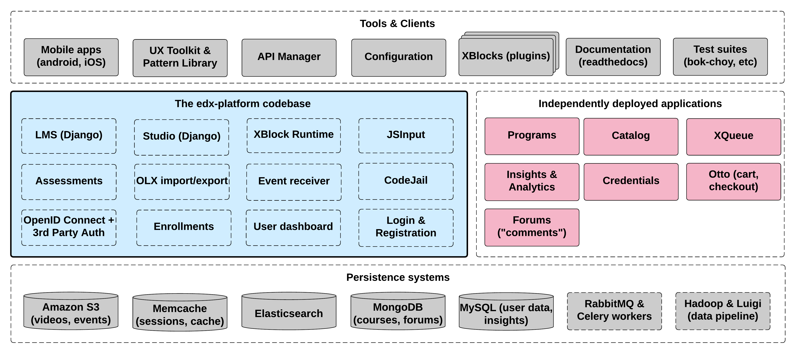
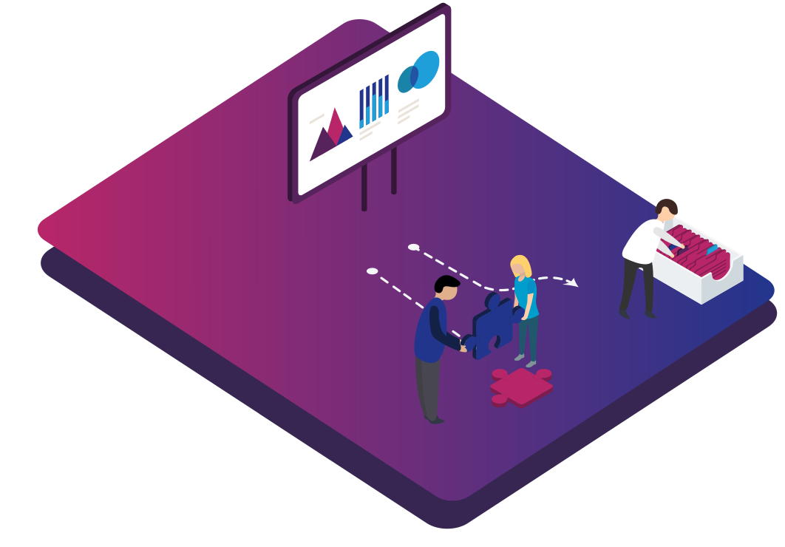

Open edX architecture¶
The centerpiece of the Open edX architecture is edx-platform, which contains the learning management and course authoring applications (LMS and Studio, respectively).
This service is supported by a collection of other autonomous web services called independently deployed applications (IDAs). Over time, edX plans to break out more of the existing edx-platform functions into new IDAs. This strategy will help manage the complexity of the edx-platform code base to make it as easy as possible for developers to approach and contribute to the project.
{kind=link}
Almost all of the server-side code in the Open edX project is in Python, with Django as the web application framework.
Key Components¶
- Learning Management System (LMS)
The LMS is the most visible part of the Open edX project. Learners take courses using the LMS. The LMS also provides an instructor dashboard that users who have the Admin or Staff role can access by selecting Instructor.
- Instructor View:
As an instructor, the Open edX Learning Management System (LMS) is the central hub where you manage your courses. The LMS provides an instructor dashboard that allows you to publish courses, post discussion boards, manage teams and cohorts, edit grades, and communicate with learners. The LMS uses a combination of data stores to support its functionalities, with courses stored in MongoDB, videos served through external platforms like YouTube or Amazon S3, and per-learner data stored in MySQL.
- Learner View:
As a learner, the Open edX Learning Management System (LMS) is the central hub where you access your courses and interact with course content. You can access your profile, check your enrollment status, and browse courses via your learner dashboard. The LMS uses a combination of data stores to support its functionalities, with courses stored in MongoDB, videos served through external platforms like YouTube or Amazon S3, and per-learner data stored in MySQL. As you interact with the courses, the LMS captures your activities and publishes them as events to the analytics pipeline for collection, analysis, and reporting.
- Features:
The Open edX Learning Management System (LMS) provides access to course content and supporting infrastructure for both instructors and learners. It equally supports online courses, online campuses, and online degree programs. The LMS is available for desktop, iOS, and Android versions, providing flexibility in accessing course content. The customizable learner experience reflects your unique brand identity and preferences, with features such as schedules, discussion boards, collaboration tools, student administration, certificate generation, messaging, and more. As learners interact with the courses, the LMS captures their activities and publishes them as events to the analytics pipeline for collection, analysis, and reporting, providing valuable insights into learner behavior and course performance.
- 1.1. Front End
The front-end of the Open edX Learning Management System (LMS) is responsible for the user interface that learners and instructors interact with. It includes the layout, design, and functionality of the platform that enables learners to access courses, navigate through the course materials, interact with the instructors and other learners, and track their progress.
The Open edX LMS front-end is built using a combination of technologies such as Mako for server-side code, JavaScript and CoffeeScript for browser-side code, and Sass and the Bourbon framework for CSS code. The client-side code uses the Backbone.js framework, which is a popular JavaScript framework used for building single-page web applications. The use of Backbone.js enables the platform to handle complex interactions and dynamic content, providing a seamless user experience for learners and instructors.
The front-end of the Open edX LMS is highly customizable, allowing instructors to tailor the platform to meet their specific needs. The platform provides a range of features such as schedules, discussion boards, collaboration tools, student administration, certificate generation, messaging, and more. These features are designed to enhance the learner experience and help instructors manage their courses more efficiently.
The Open edX project has a comprehensive documentation site that includes information about the front-end technology stack, as well as tutorials and guides for developers who want to customize and extend the platform. Additionally, there are many online resources available for those who want to learn more about front-end web development, JavaScript frameworks, and CSS frameworks like Sass and Bourbon.
- 1.2. Course Browsing
The Open edX project provides a simple front page for browsing courses. The edx.org site has a separate home page and course discovery site that is not open source.
- 1.3. Course Structure
Open edX courses are composed of units called XBlocks. Anyone can write new XBlocks, allowing educators and technologists to extend the set of components for their courses. The edX platform also still contains several XModules, the precursors to XBlocks. EdX is working to rewrite the existing XModules as XBlocks and remove XModules from our code base.
In addition to XBlocks, there are a few ways to extend course behavior:
The LMS is an LTI tool consumer. Course authors can embed LTI tools to integrate other learning tools into an Open edX course.
Problems can use embedded Python code to either present the problem or assess the learner’s response. Instructor-written Python code is executed in a secure environment called CodeJail.
JavaScript components can be integrated using JS Input.
Courses can be exported and imported using OLX (open learning XML), an XML- based format for courses.
- Studio
Studio is the course authoring environment. Course teams use it to create and update courses. Studio writes its courses to the same Mongo database that the LMS uses.
Author courses and evolve your content while live with learners
Manage your course schedule, course team, and grading policy
Utilize documented and open XML standards (OLX) for import/export of courses.
Easily import content and manage content across platforms.
Access rich 3rd-party tools or add additional building blocks
- Discussions
Course discussions are managed by an IDA called comments (also called forums). comments is one of the few non-Python components, written in Ruby using the Sinatra framework. The LMS uses an API provided by the comments service to integrate discussions into the learners’ course experience.
The comments service includes a notifier process that sends learners notifications about updates in topics of interest.
- Mobile Apps
The Open edX project includes a mobile application, available for iOS and Android, that allows learners to watch course videos and more. EdX is actively enhancing the mobile app.
- Analytics
Open edX Insights provides intelligent, learner-centric analytics to help instructors understand how learners engage with course material.
Designed to support millions of users, Open edX Insights scales along with your learning program.
Built-in reports help instructors and course teams manage online content for cohorts of any size.
Learning teams can leverage existing data to build custom adaptive content and store data in a warehouse or learning record store (LRS).
Events describing learner behavior are captured by the Open edX analytics pipeline. The events are stored as JSON in S3, processed using Hadoop, and then digested, aggregated results are published to MySQL. Results are made available via a REST API to Insights, an IDA that instructors and administrators use to explore data that lets them know what their learners are doing and how their courses are being used.

At the center of the architecture is the edX analytics pipeline, which is responsible for collecting, processing, and storing data from various sources, such as user interactions with the edX platform, course content, and assessments. This data is then used to generate insights and reports that help instructors and administrators understand learner behavior, course effectiveness, and other metrics related to the performance of their courses.
The data is collected by various components of the platform, such as the edX LMS (Learning Management System), which manages the delivery of course content and assessments, and the edX Insights API, which provides access to data collected by the edX analytics pipeline.
The collected data is processed by various analytical tools, such as Hadoop, Spark, and Hive, which are used to store and process large amounts of data efficiently. The processed data is then stored in various data stores, such as MongoDB, MySQL, and ElasticSearch, which provide fast and efficient access to the data for analysis and reporting.
The architecture also includes various reporting and visualization tools, such as Jupyter Notebook, which is used to create interactive reports and visualizations of the data. These reports and visualizations can be accessed by instructors and administrators through the edX Insights Dashboard, which provides a unified view of the analytics data for their courses
- Background Work
A number of tasks are large enough that they are performed by separate background workers, rather than in the web applications themselves. This work is queued and distributed using Celery and RabbitMQ. Examples of queued work include:
Grading entire courses
Sending bulk emails (with Amazon SES)
Generating answer distribution reports
Producing end-of-course certificates
The Open edX project includes an IDA called XQueue that can run custom graders. These are separate processes that run compute-intensive assessments of learners’ work.
- Search
The Open edX project uses Elasticsearch for searching in multiple contexts, including course search and the comments service.
- Other Components
In addition to the components detailed above, the Open edX project also has services for other capabilities, such as one that manages e-commerce functions like order work flows and coupons.
{kind=link}
{kind=link}